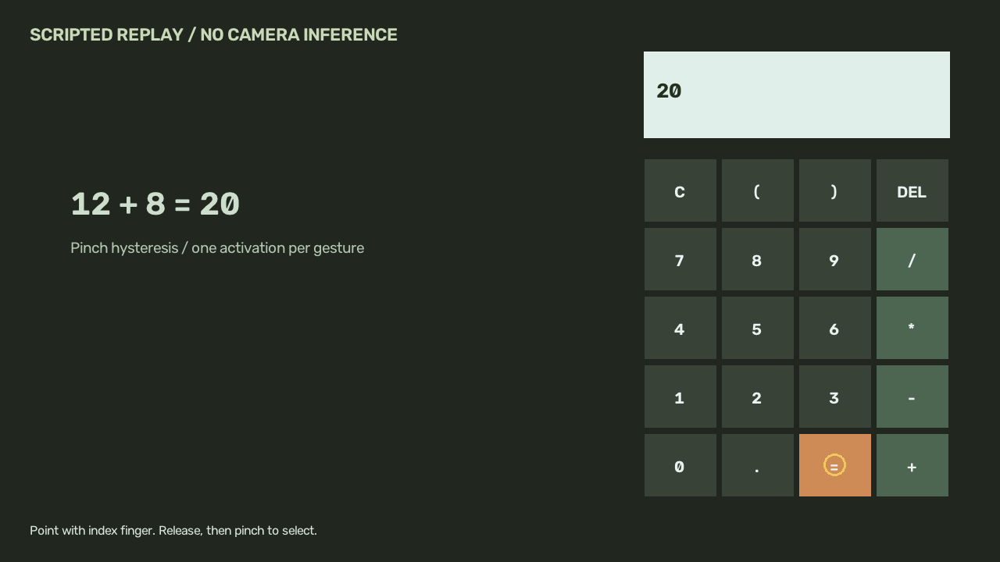

Computer vision / Academic project reconstruction
Gesture-controlled virtual calculator
A gesture-controlled calculator interface using hand landmarks and pinch input.

Scripted calculator interface demonstration
Project overview
Explore a touch-free interface for selecting calculator keys with hand movements.
Approach
- MediaPipe hand landmarks and fingertip targeting.
- Pinch and release logic for virtual-keypad interaction.
- Arithmetic parsing, visual feedback and a mouse-input fallback.
Engineering focus
Human-machine interfaces, computer vision and Python application development.